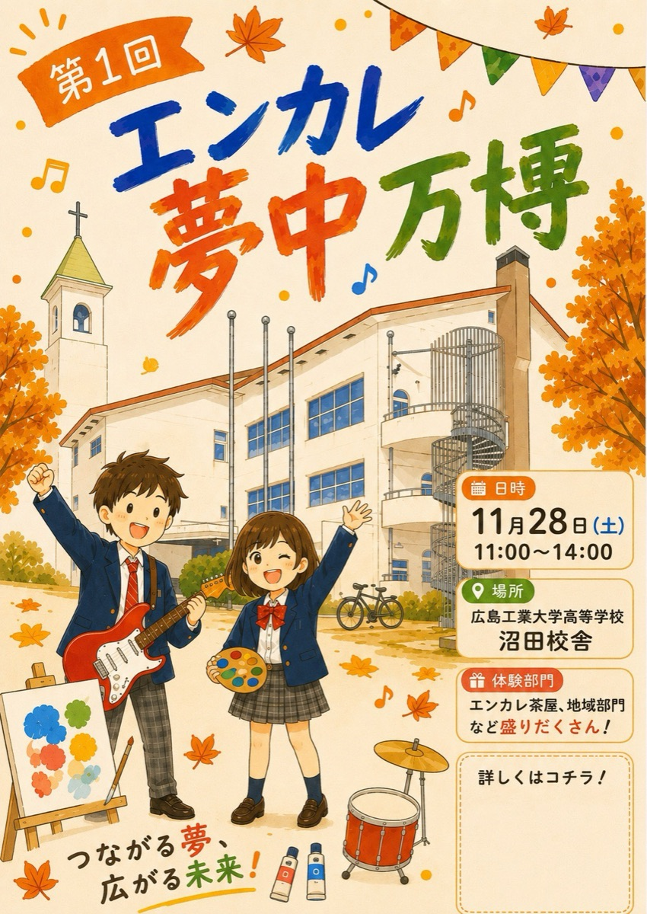

輪ゴム鉄砲の射的＆くじ引き
学校の竹林で取った竹で、輪ゴム鉄砲を手作りしました。景品は生徒が3Dプリンターなどでつくったオリジナルグッズ。参加賞の駄菓子もあります。
第1回ENCARE MUCHU EXPO 2026
つながる夢、広がる未来！
ADMISSION ／ ご案内
どなたでもお気軽にお越しください
GUIDE
まずはここだけ見れば大丈夫です。
場所や時間は決まり次第、このページでお知らせします。
PAVILIONS
価格はすべて予定です。当日変わることがあります。
遊んで、つくって、持って帰れる
学校の竹林で取った竹で、輪ゴム鉄砲を手作りしました。景品は生徒が3Dプリンターなどでつくったオリジナルグッズ。参加賞の駄菓子もあります。
夏から生徒が種をまいて育てた花（キク・パンジー・コスモス・ジニア・ビオラ）で、自分だけのしおりをつくれます。
あったかい、おいしい、ひと休み
エンカレの桜を使ったさくら茶と緑茶、焼き団子、焼き芋（大学芋・塩バター味）。
鉄板で焼きたて。青のり・マヨネーズのトッピングも。
1皿 400円前後
揚げたてに、オーロラソースとレモンを添えて。
価格は準備中
メイド喫茶風のお店で、バナナジュースとチェキ撮影が楽しめます。
ジュース 300円前後 ／ チェキ 350円前後
つくる人と、その想いに出会う
地域でものをつくっている人と、その仕事や想いを紹介します。広島の魅力が伝わる企画を準備しています。
ひとりひとりの「夢中」
作品の展示、探究の発表、バンド演奏など、生徒が夢中になっていることを一人ひとりが表現します。
ON AIR
実行委員が会場全体に向けて放送します。午前と午後に1回ずつ生放送を予定しています。
放送の時刻は準備中
ABOUT
夢中になっていることを、
表現する。
「エンカレ祭」と「学習発表会」がひとつになった、今年はじめての行事です。生徒一人ひとりが夢中になっていることを、展示・発表・お店・体験のかたちでお見せします。
おそろいのバンダナは白。「みんなで同じスタート地点から」という想いと、一日の頑張りが見えるように、という理由で選びました。

INFORMATION
バンド演奏や校内放送があります。音に敏感な方は、イヤーマフなどをお持ちください。
射的では輪ゴムを使います。的に向けて、人には向けないでください。
焼き芋や焼きそばなど、屋外で火や鉄板を使います。お店のまわりではお気をつけください。
使っている材料は、お店の生徒におたずねください。
駐車場については準備中